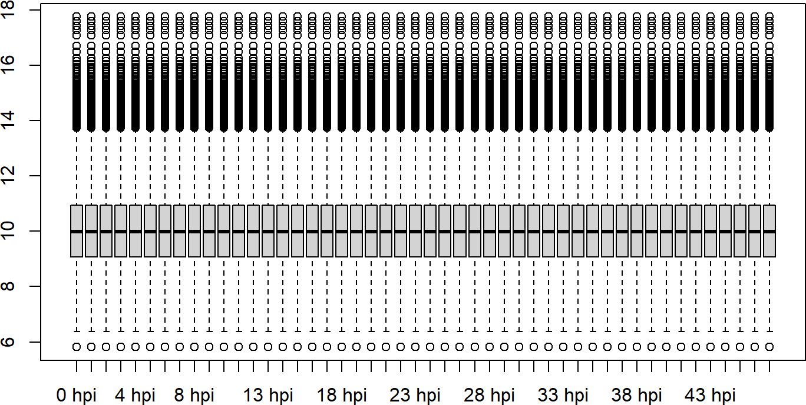
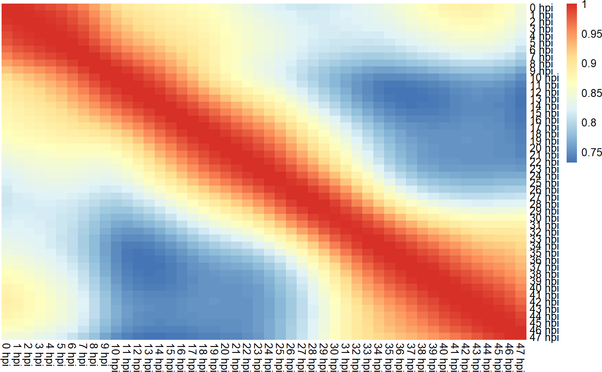
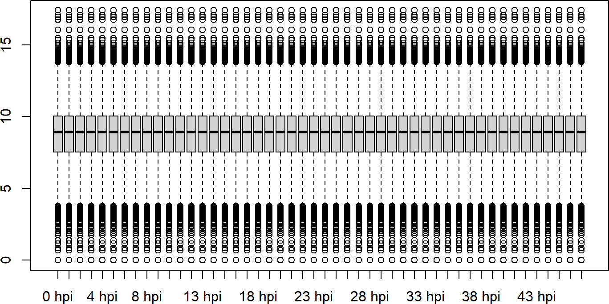
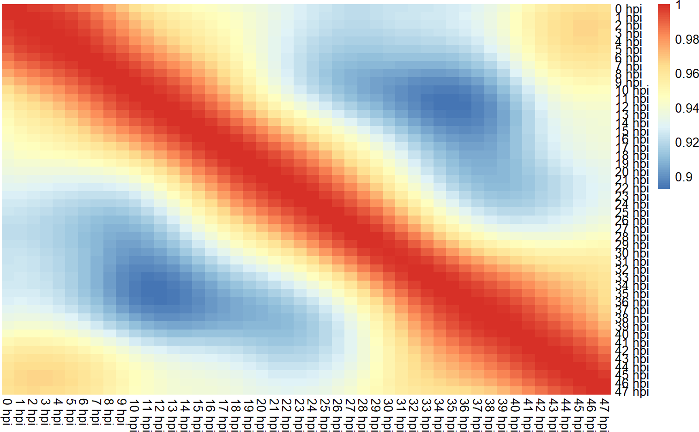

Microarray data reanalysis
Rohit Satyam
King Abdullah University of Science & Technology, Saudi ArabiaAlberto Maillo
King Abdullah University of Science & Technology, Saudi ArabiaDavid Gomez-Cabrero
King Abdullah University of Science & Technology, Saudi ArabiaArnab Pain
King Abdullah University of Science & Technology, Saudi Arabia08 July, 2026
Source:vignettes/Microarray_reanalysis.Rmd
Microarray_reanalysis.RmdAbstract
This section covers examplary code on how one can reanalyze microarray data of Apicomplexans (here Plasmodium as an example).
Introduction
This vignette covers the example on how users can reanalyze the
Microarray data sets by updating the annotations from VEuPathDB
partially using toGeneid() and other R packages. It is
important to do reanalysis before deciding to reuse such dataset as
annotations evolve since it will affect the outcome of the analysis.
Importing the dataset
## Loading necessary libraries
library(GEOquery) # Querying the dataset from GEO
library(plasmoRUtils) # For gene ID conversion
library(Biostrings) # For sequence alignment
library(GenomicRanges) # For handling genomic coordinates
library(dplyr) # For data wrangling
library(GeneStructureTools) # to remove the gene/transcript versionsFor demonstration purpose, we will use GSE66669 from
(Painter et al.
2018). This is a time-series dataset that is often used by
Plasmodium community to annotate single cell atlas and
deconvolution tasks.
The getGEO function retrieves the Microarray dataset as
ExpressionSet object from GEO database. We will make a new
column by combining the Old Ids and the probe sequence since we know
that there can be multiple sequence for one probe ID and same probe ID
for multiple genes.
gse <- getGEO("GSE66669")
gse <- gse$GSE66669_series_matrix.txt.gz
class(gse)
#> [1] "ExpressionSet"
#> attr(,"package")
#> [1] "Biobase"
dim(gse) ## 14499 rows and 144 samples
#> Features Samples
#> 14499 144
featureNames(gse) %>% head() ## The features are ID number.
#> [1] "4" "5" "6" "7" "8" "9"
## probe information is stored in
probedf <- fData(gse)
head(probedf)
#> ID COL ROW NAME CONTROL_TYPE ACCESSION_STRING ORF
#> 4 4 96 158 PFL0815W_v7.1_P1/3 FALSE PFL0815w PFL0815w
#> 5 5 96 156 PFB0495W_v7.1_P3/4 FALSE PFB0495w PFB0495w
#> 6 6 96 154 PF13_0050_v7.1_P1/4 FALSE PF13_0050 PF13_0050
#> 7 7 96 152 PF14_0416_v7.1_P1/2 FALSE PF14_0416 PF14_0416
#> 8 8 96 150 PF11_0120_v7.1_P1/1 FALSE PF11_0120 PF11_0120
#> 9 9 96 148 PFI1280C_v7.1_P5/9 FALSE PFI1280c PFI1280c
#> CHROMOSOMAL_LOCATION DESCRIPTION
#> 4 unmapped DNA-binding chaperone, putative
#> 5 unmapped conserved Plasmodium protein, unknown function
#> 6 unmapped HORMA domain protein, putative
#> 7 unmapped zinc finger protein, putative
#> 8 unmapped conserved Plasmodium protein, unknown function
#> 9 unmapped protein kinase, putative
#> SEQUENCE
#> 4 TGAGTGGATGTAATTTAATATGGTTAGATAAAGCAACCAAAAAGAGGAGCAAGGATATAT
#> 5 GAAAGTTTACAGAGTGAGTTTGAAAAAGTAACAAAAACTAGTAAAAAGGGAGGTATACAT
#> 6 AAACAAATGAATATCCACCTGAAAACAACCTTCTATTAAACAGTAACGATATATACCCTC
#> 7 AAAAAAGATAGTTTAGCAAAAAACAAATATACTGGGTTATATGGACCTGTACGTAGTAGT
#> 8 CGAATTATCATGGCCTTGAAAAATCATTAAGAAGACGAGGAGGTAAGATAAAAACTATTT
#> 9 CTTGTTGATTGTAACAACAGATCATTGATGAATAAAAATGTAATGGATTTTGCACATATG
#> SPOT_ID
#> 4 PFL0815W_v7.1_P1/3
#> 5 PFB0495W_v7.1_P3/4
#> 6 PF13_0050_v7.1_P1/4
#> 7 PF14_0416_v7.1_P1/2
#> 8 PF11_0120_v7.1_P1/1
#> 9 PFI1280C_v7.1_P5/9
## There are 29 rows for which ORF entry is missing
table(probedf$ACCESSION_STRING==probedf$ORF)
#>
#> FALSE TRUE
#> 29 14470
probedf$ACCESSION_STRING[probedf$ACCESSION_STRING!=probedf$ORF]
#> [1] "RNAzID:1537" "RNAzID:3967" "ScGlucanSynthase" "U5RNA"
#> [5] "ScGlucanSynthase" "RNAzID:2132" "RNAzID:1876" "ScGlucanSynthase"
#> [9] "ScGlucanSynthase" "RNAzID:1678" "ScCD" "ScUPRT"
#> [13] "S1-type_28S:rRNA" "ScGlucanSynthase" "ScGlucanSynthase" "ScGlucanSynthase"
#> [17] "ScGlucanSynthase" "ScGlucanSynthase" "tetR" "RNAzID:1743"
#> [21] "ScGlucanSynthase" "ScGlucanSynthase" "ScGlucanSynthase" "ScGlucanSynthase"
#> [25] "ScGlucanSynthase" "RNAzID:3370" "ScGlucanSynthase" "Rluciferase"
#> [29] "ScGlucanSynthase"
probedf$ORF[probedf$ACCESSION_STRING!=probedf$ORF]
#> [1] "" "" "" "" "" "" "" "" "" "" "" "" "" "" "" "" "" "" "" "" "" "" "" "" ""
#> [26] "" "" "" ""
## Let's make unique identifiers by combining the Accession_string and sequence for those probes for which toGeneid function will fail
gse@featureData@data$unique <- paste0(gse@featureData@data$SEQUENCE,":",gse@featureData@data$ACCESSION_STRING)
probedf <- fData(gse)The row names matches the ID column. We can see that the old “PFL”
ids are present in the ACCESSION_STRING or ORF
columns while the probe sequences are present in SEQUENCE
column. Some 29 rows contains some Plasmodium ncRNAs (RNAzID),
followed by several control probes (see table below).
| Probe ID | What it Is | Purpose |
|---|---|---|
| RNAzID:1537, 1678, 1743, 1876, 2132, 3370, 3967 | Predicted non-coding RNAs in the Plasmodium genome (identified by the RNAz algorithm) | To assay expression (or absence thereof) of structured ncRNAs—often used to explore regulatory RNAs or as negative controls when comparing to mRNA signals. |
| U5RNA | U5 small nuclear RNA | A core spliceosomal snRNA—serves as a housekeeping control for RNA integrity and normalization. |
| S1-type_28S:rRNA | A segment of 28S ribosomal RNA | Ribosomal RNA control for overall RNA loading and quality. |
| ScGlucanSynthase | Saccharomyces cerevisiae glucan synthase transcript | Spike-in control from yeastto: monitor labeling efficiency and hybridization consistency. |
| ScCD | S. cerevisiae cytosine deaminase | Another yeast spike-in for normalization across arrays. |
| ScUPRT | S. cerevisiae uracil phosphoribosyltransferase | Yeast spike-in control for detection sensitivity. |
| tetR | Bacterial tetracycline repressor | Exogenous control to check for cross-hybridization and labeling. |
| Rluciferase | Renilla luciferase | Reporter gene spike-in: assesses labeling and detection linearity. |
## Let's use toGeneid function to map most of the old gene IDs to new IDs
new <- toGeneid(inputid = unique(probedf$ACCESSION_STRING),from = "old",to = "ensembl") %>%
unique()
## Some old IDs might map to two or more new PF3D7 Ids. In such case we will remove them from new df and add them to unmapped IDs to resolve them using probe sequence pattern search
multimap <- table(new$`Previous ID(s)`)[table(new$`Previous ID(s)`)>1] %>% names() %>% unique()
new <- subset(new, !(`Previous ID(s)` %in% multimap))
## Check which IDs failed to map
unmappedids <- setdiff(probedf$ACCESSION_STRING,new$`Previous ID(s)`) %>% unique()
unmappedprobes_df <- subset(probedf, ACCESSION_STRING %in% unmappedids) %>%
.[,c("ACCESSION_STRING" ,"SEQUENCE","unique")] %>%
unique()
## Merge the new Ids df with probedf
probedf <- S4Vectors::merge(probedf, new, all.x=TRUE, all.y=FALSE, by.x="ACCESSION_STRING", by.y="Previous ID(s)", sort=FALSE)Now, we observe that 130 probes failed to map using
toGeneid function. This would now require us to map the
probe sequence to mRNA sequences to figure out which gene the probes
belongs to. Since these probe sequences are short and 60 bp long, we can
perform pattern search using Biostrings::vmatchPattern().
Below we will use max.mismatch=0 in order to identify exact
sequence and avoid false positives. However, you can increase the
mismatches if a lot sequences fails to map.
## retriving mRNA from plasmoDB
mrna_fasta <- readDNAStringSet("https://plasmodb.org/common/downloads/release-68/Pfalciparum3D7/fasta/data/PlasmoDB-68_Pfalciparum3D7_AnnotatedTranscripts.fasta")
## Simplifying the transcript IDs by removing descriptions
names(mrna_fasta) <- stringr::str_split(names(mrna_fasta), pattern = "[ ]", n = 2, simplify = T)[, 1]
## we will use sequences to name the list because there are cases where the gene such as PFC0590c have more than two probes but they map to transcripts from different genes
probe_matches_zero <- lapply(unmappedprobes_df$SEQUENCE, function(seq) {
vmatchPattern(seq, mrna_fasta, max.mismatch = 0)
}) %>% setNames(unmappedprobes_df$unique)
## Checking if the unique column strings are actually unique or not
unique(unmappedprobes_df$unique) %>% length()
#> [1] 279
## The function above will return empty IRanges for those transcripts for which there was no match found
## So let's filter them
zero <- sapply(probe_matches_zero, function(x) names(mrna_fasta)[lengths(x) > 0])
## Removing the versions from transcript IDs to convert them to gene IDs. This df will be smaller than unmappedprobes_df because some sequence match will not return any hits
zero <- sapply(zero, function(x) unique(removeVersion(x))) %>%
plyr::ldply(.,.fun = rbind) %>% ## Convert list to df
unique()
zero %>% head()
#> .id
#> 1 TTTACATCAGAAAATGACATCATAAATGAAGAGAAGAGAAAAAGCAAAAATAACTTGTGC:PF14_0788-c
#> 2 TCAAAACATCAAGAGAACAAATAAATATATACAATGCACCGAAAGGAATCATAAGGGGAA:PFL0825c-a
#> 3 AAGGCACAGATGATTTACGACATCATAATTCTAATACTACGGATTATAGTGGTTATAGTA:PF10_0161
#> 4 TAATAAAACCCGAACCAATAAATACAGACAATGATAAAACTAGTAGACTGGTAGAAAGCT:PF10_0168-a
#> 5 GCTAGTGCATCATGTATGACTGCATGTTTACAAGTATTTATAGAAAAAGGAATGAGTTTT:mal_mito_1
#> 6 GTTTTCTTTGAAGTGACACAGGTTCGATTCCGCGTCCTTGAGTTTCTGAGATAAAAAGTT:Pfa_snoR_42a
#> 1 2 3
#> 1 PF3D7_1404600 <NA> <NA>
#> 2 PF3D7_1217100 <NA> <NA>
#> 3 PF3D7_1016500 <NA> <NA>
#> 4 PF3D7_1017300 <NA> <NA>
#> 5 PF3D7_MIT01400 <NA> <NA>
#> 6 PF3D7_0115050 PF3D7_0601800 PF3D7_0800650
## Sanity check if ID column has any duplicates
table(zero$.id)[table(zero$.id)>1]
#> named integer(0)
## Combine these results with probedf
probedf <- S4Vectors::merge(probedf, zero[,c(1,2)], all.x=TRUE, all.y=FALSE, by.x="unique", by.y=".id", sort=FALSE)
probedf$`Gene ID`[is.na(probedf$`Gene ID`)] <- probedf$`1`[is.na(probedf$`Gene ID`)]
probedf <- probedf %>% select(-`1`, -unique)
## The sequences that failed to map are either control genes or genes that have been removed from the annotations
probedf$ACCESSION_STRING[is.na(probedf$`Gene ID`)] %>% unique()
#> [1] "eGFP_mut2" "MAL1_ITS2" "MAL7P1.142" "Fluciferase"
#> [5] "ScGlucanSynthase" "tetR" "DsRed" "ScCD"
#> [9] "Pfa_snoR_37" "PF13TR006" "ScUPRT" "Rluciferase"
#> [13] "neoR" "PF11_0033" "RNAzID:1743" "BSD"
#> [17] "CsA" "RNAzID:3370" "MAL1_ITS1" "Mp_rRNA"
#> [21] "FKBP" "PF14TR004" "RNAzID:1876" "MAL7_ITS1"
#> [25] "RNAzID:3967" "MAL5_ITS1" "HsDHFR" "mCherry"
## We will replace the missing Gene IDs with their previous accessions.
gse@featureData@data$`Gene ID`[is.na(gse@featureData@data$`Gene ID`)] <- gse@featureData@data$ACCESSION_STRING[is.na(gse@featureData@data$`Gene ID`)]
rownames(probedf) <- probedf$IDSince we used zero mismatches, ideally the probe sequence should
match with only one gene IDs (even if it maps to multiple transcripts of
same gene me remove the version from transcript IDs so we have 1 probe
to 1 gene mapping). However, there could be causes where the probe
sequence maps without any mismatch to multiple locations. Such ids will
have hits in column 2 and 3. One such probe is
Pfa_snoR_42a which confidently maps with
PF3D7_0601800, PF3D7_0115050 and
PF3D7_0800650. We confirm this with BlastN as well in
PlasmoDB. All these three genes codes for small nucleolar RNA but are
present on 6, 1 and 8 chromosome
respectively. Since chromosomal information is absent from
probedf, we can’t say for sure which gene this probe
represents. So we will use first hit and assign it to
PF3D7_0115050
Updating the feature data in the Expression set
We will now use limma’s avereps function to get the
average values per gene ID.
gse@featureData@data <- probedf[rownames(gse@featureData@data),]
## retriving the intensity matrix
matrix <- assayData(gse)$exprs
library(limma)
probes2genes <- fData(gse)$`Gene ID` %>% setNames(fData(gse)$ID)
gene.mat <- avereps(matrix, ID=probes2genes, method="median")
gene.mat %>% head() %>% .[,1:5]
#> GSM1627532 GSM1627533 GSM1627534 GSM1627535 GSM1627536
#> PF3D7_1216900 4929.1199 4901.7775 4846.6257 4753.3563 4619.9623
#> PF3D7_0211100 321.2292 324.0473 326.6416 329.4834 335.1214
#> PF3D7_1309400 740.9756 752.7146 766.7923 783.4820 801.7903
#> PF3D7_1443800 1029.0478 1049.5709 1069.6907 1090.2481 1107.5859
#> PF3D7_1111400 1418.8720 1390.1635 1367.5520 1351.4528 1335.2197
#> PF3D7_0926100 2274.6915 2224.1830 2177.2646 2130.5968 2085.8498Checking correlation between samples of time series data
This GSE series contains 3 time-series condition:
Total RNA reflects the combined pool of transcripts in the cell at each timepoint, ( similar to standard RNA-seq.)
Labeled (transcribed) captures only nascent RNA from the 10 min 4-TU pulse (a snapshot of transcription rate). For some reason Malaria Cell Atlas people use this.
Unlabeled (stabilized) captures the pre-existing pool not labeled during the pulse (a proxy for RNA stability/turnover).
For more details read Nascent in vivo mRNA labeling and capture throughout the IDC section of the paper.
temp <- gse[,gse$characteristics_ch1.2=="sample type: Total RNA"]
matrix <- assayData(temp)$exprs
gene.mat <- avereps(matrix, ID=probes2genes, method="mean")
gene.mat <- gene.mat[!(is.na(rownames(gene.mat))),] ## Some rows names have NA i don't know why!!
## Remove control genes
gene.mat <- gene.mat[grepl("PF3D7",rownames(gene.mat)),]
colnames(gene.mat) <- temp$`time (hours post invasion):ch1`
gene.mat <- log2(normalizeQuantiles(gene.mat) + 1)
boxplot(gene.mat)
coormat <- cor(gene.mat)
pheatmap::pheatmap(coormat, cluster_rows = F, cluster_cols = F, border_color = NA)
For labeled data
temp <- gse[,gse$characteristics_ch1.2=="sample type: 4-TU Labeled RNA"]
matrix <- assayData(temp)$exprs
gene.mat <- avereps(matrix, ID=probes2genes, method="mean")
gene.mat <- gene.mat[!(is.na(rownames(gene.mat))),] ## Some rows names have NA i don't know why!!
gene.mat <- gene.mat[grepl("PF3D7",rownames(gene.mat)),]
colnames(gene.mat) <- temp$`time (hours post invasion):ch1`
gene.mat <- log2(normalizeQuantiles(gene.mat) + 1)
boxplot(gene.mat)
coormat <- cor(gene.mat)
pheatmap::pheatmap(coormat, cluster_rows = F, cluster_cols = F, border_color = NA)
Session Info
utils::sessionInfo()
#> R version 4.4.1 (2024-06-14 ucrt)
#> Platform: x86_64-w64-mingw32/x64
#> Running under: Windows 11 x64 (build 26200)
#>
#> Matrix products: default
#>
#>
#> locale:
#> [1] LC_COLLATE=English_India.utf8 LC_CTYPE=English_India.utf8
#> [3] LC_MONETARY=English_India.utf8 LC_NUMERIC=C
#> [5] LC_TIME=English_India.utf8
#>
#> time zone: Asia/Riyadh
#> tzcode source: internal
#>
#> attached base packages:
#> [1] stats4 stats graphics grDevices utils datasets methods
#> [8] base
#>
#> other attached packages:
#> [1] limma_3.60.6 GeneStructureTools_1.24.0
#> [3] dplyr_1.2.1 GenomicRanges_1.56.2
#> [5] Biostrings_2.72.1 GenomeInfoDb_1.40.1
#> [7] XVector_0.44.0 IRanges_2.38.1
#> [9] S4Vectors_0.42.1 plasmoRUtils_1.1.1
#> [11] rlang_1.3.0 readr_2.2.0
#> [13] janitor_2.2.1 GEOquery_2.72.0
#> [15] Biobase_2.64.0 BiocGenerics_0.50.0
#> [17] BiocStyle_2.32.1
#>
#> loaded via a namespace (and not attached):
#> [1] R.methodsS3_1.8.2 dichromat_2.0-0.1
#> [3] vroom_1.7.1 progress_1.2.3
#> [5] vsn_3.72.0 nnet_7.3-20
#> [7] vctrs_0.7.3 digest_0.6.39
#> [9] png_0.1-9 proxy_0.4-29
#> [11] MSnbase_2.30.1 deldir_2.0-4
#> [13] parallelly_1.48.0 MASS_7.3-65
#> [15] pkgdown_2.2.0 reshape2_1.4.5
#> [17] foreach_1.5.2 withr_3.0.3
#> [19] xfun_0.59 survival_3.8-6
#> [21] memoise_2.0.1 hexbin_1.28.5
#> [23] mixtools_2.0.0.1 systemfonts_1.3.2
#> [25] ragg_1.5.2 gtools_3.9.5
#> [27] easyPubMed_3.1.6 R.oo_1.27.1
#> [29] Formula_1.2-5 prettyunits_1.2.0
#> [31] KEGGREST_1.44.1 promises_1.5.0
#> [33] otel_0.2.0 httr_1.4.8
#> [35] restfulr_0.0.17 globals_0.19.1
#> [37] rstudioapi_0.19.0 UCSC.utils_1.0.0
#> [39] generics_0.1.4 base64enc_0.1-6
#> [41] processx_3.9.0 curl_7.1.0
#> [43] ncdf4_1.24 zlibbioc_1.50.0
#> [45] ScaledMatrix_1.12.0 randomForest_4.7-1.2
#> [47] bio3d_2.4-5 GenomeInfoDbData_1.2.12
#> [49] SparseArray_1.4.8 xtable_1.8-8
#> [51] stringr_1.6.0 desc_1.4.3
#> [53] doParallel_1.0.17 evaluate_1.0.5
#> [55] S4Arrays_1.4.1 BiocFileCache_2.12.0
#> [57] preprocessCore_1.66.0 hms_1.1.4
#> [59] bookdown_0.47 irlba_2.3.7
#> [61] colorspace_2.1-2 filelock_1.0.3
#> [63] magrittr_2.0.5 snakecase_0.11.1
#> [65] later_1.4.8 viridis_0.6.5
#> [67] lattice_0.22-9 MsCoreUtils_1.16.1
#> [69] future.apply_1.20.2 SparseM_1.84-2
#> [71] XML_3.99-0.23 scuttle_1.14.0
#> [73] matrixStats_1.5.0 class_7.3-23
#> [75] Hmisc_5.2-6 pillar_1.11.1
#> [77] nlme_3.1-169 iterators_1.0.14
#> [79] compiler_4.4.1 beachmat_2.20.0
#> [81] stringi_1.8.7 gower_1.0.2
#> [83] SummarizedExperiment_1.34.0 dendextend_1.19.1
#> [85] lubridate_1.9.5 GenomicAlignments_1.40.0
#> [87] drawProteins_1.24.0 plyr_1.8.9
#> [89] crayon_1.5.3 abind_1.4-8
#> [91] BiocIO_1.14.0 bit_4.6.0
#> [93] chromote_0.5.1 pcaMethods_1.96.0
#> [95] codetools_0.2-20 textshaping_1.0.5
#> [97] recipes_1.3.3 BiocSingular_1.20.0
#> [99] MLInterfaces_1.84.0 bslib_0.11.0
#> [101] e1071_1.7-17 biovizBase_1.52.0
#> [103] plotly_4.12.0 LaplacesDemon_16.1.8
#> [105] MultiAssayExperiment_1.30.3 splines_4.4.1
#> [107] Rcpp_1.1.2 dbplyr_2.6.0
#> [109] sparseMatrixStats_1.16.0 interp_1.1-6
#> [111] knitr_1.51 blob_1.3.0
#> [113] clue_0.3-68 mzR_2.38.0
#> [115] AnnotationFilter_1.28.0 fs_2.1.0
#> [117] checkmate_2.3.4 QFeatures_1.14.2
#> [119] listenv_1.0.0 mzID_1.42.0
#> [121] DelayedMatrixStats_1.26.0 Gviz_1.48.0
#> [123] tibble_3.3.1 Matrix_1.7-5
#> [125] statmod_1.5.2 tzdb_0.5.0
#> [127] lpSolve_5.6.23 pheatmap_1.0.13
#> [129] pkgconfig_2.0.3 tools_4.4.1
#> [131] cachem_1.1.0 BSgenome.Mmusculus.UCSC.mm10_1.4.3
#> [133] RSQLite_3.53.3 viridisLite_0.4.3
#> [135] rvest_1.0.5 DBI_1.3.0
#> [137] impute_1.78.0 fastmap_1.2.0
#> [139] rmarkdown_2.31 scales_1.4.0
#> [141] grid_4.4.1 gt_1.3.0
#> [143] Rsamtools_2.20.0 sass_0.4.10
#> [145] coda_0.19-4.1 FNN_1.1.4.1
#> [147] BiocManager_1.30.27 VariantAnnotation_1.50.0
#> [149] graph_1.82.0 SingleR_2.6.0
#> [151] rpart_4.1.27 farver_2.1.2
#> [153] yaml_2.3.12 AnnotationForge_1.46.0
#> [155] latticeExtra_0.6-31 MatrixGenerics_1.16.0
#> [157] foreign_0.8-91 rtracklayer_1.64.0
#> [159] cli_3.6.6 purrr_1.2.2
#> [161] txdbmaker_1.0.1 lifecycle_1.0.5
#> [163] caret_7.0-1 mvtnorm_1.4-1
#> [165] backports_1.5.1 lava_1.9.2
#> [167] kernlab_0.9-33 BiocParallel_1.38.0
#> [169] annotate_1.82.0 timechange_0.4.0
#> [171] gtable_0.3.6 rjson_0.2.23
#> [173] parallel_4.4.1 pROC_1.19.0.1
#> [175] jsonlite_2.0.0 bitops_1.0-9
#> [177] ggplot2_4.0.3 bit64_4.8.2
#> [179] pRoloc_1.44.1 jquerylib_0.1.4
#> [181] segmented_2.2-1 R.utils_2.13.0
#> [183] timeDate_4052.112 lazyeval_0.2.3
#> [185] htmltools_0.5.9 affy_1.82.0
#> [187] GO.db_3.19.1 rappdirs_0.3.4
#> [189] ensembldb_2.28.1 glue_1.8.1
#> [191] httr2_1.2.3 RCurl_1.98-1.19
#> [193] MALDIquant_1.22.3 mclust_6.1.3
#> [195] BSgenome_1.72.0 jpeg_0.1-11
#> [197] gridExtra_2.3.1 igraph_2.3.3
#> [199] R6_2.6.1 tidyr_1.3.2
#> [201] SingleCellExperiment_1.26.0 GenomicFeatures_1.56.0
#> [203] cluster_2.1.8.2 stringdist_0.9.17
#> [205] ipred_0.9-15 DelayedArray_0.30.1
#> [207] tidyselect_1.2.1 ProtGenerics_1.36.0
#> [209] htmlTable_2.5.0 sampling_2.11
#> [211] xml2_1.6.0 AnnotationDbi_1.66.0
#> [213] future_1.70.0 ModelMetrics_1.2.2.2
#> [215] rsvd_1.0.5 S7_0.2.2
#> [217] affyio_1.74.0 topGO_2.56.0
#> [219] data.table_1.18.4 websocket_1.4.4
#> [221] mgsub_2.0.0 htmlwidgets_1.6.4
#> [223] RColorBrewer_1.1-3 biomaRt_2.60.1
#> [225] hardhat_1.4.3 prodlim_2026.03.11
#> [227] PSMatch_1.8.0